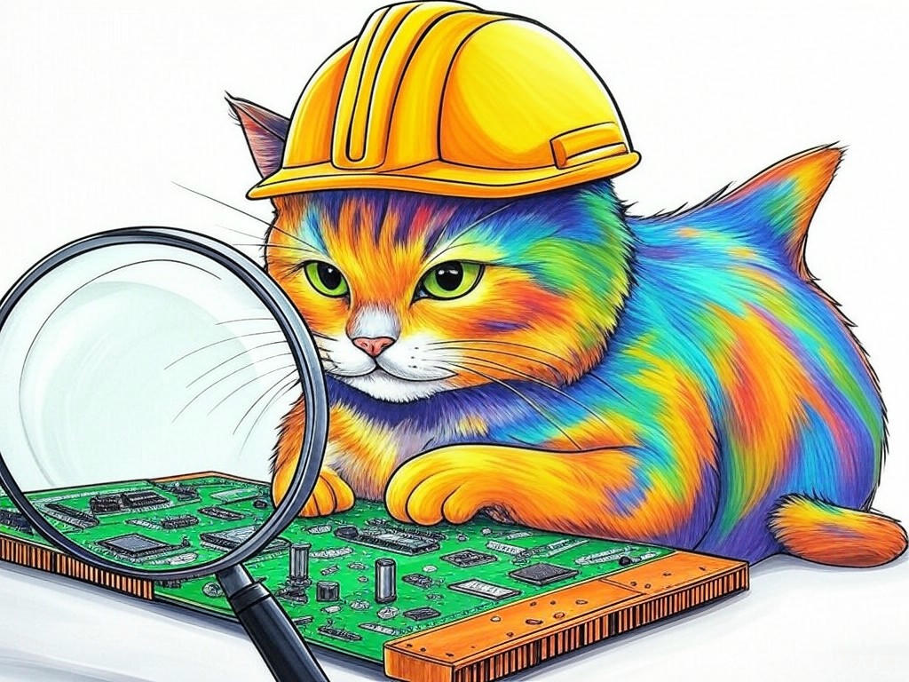
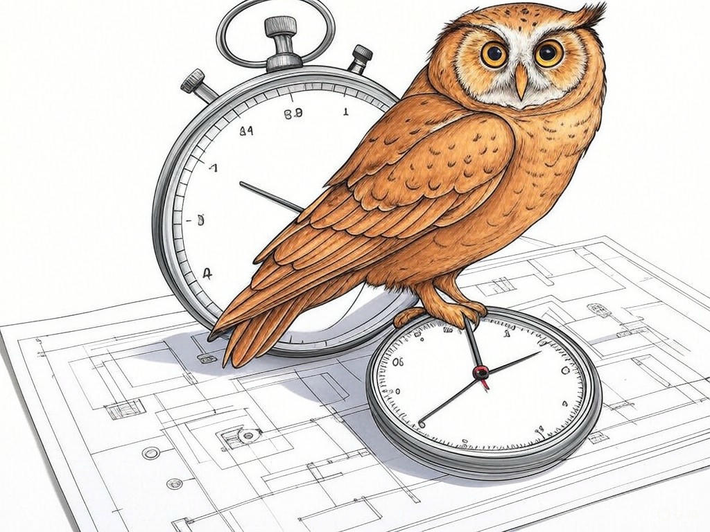

Unlocking the Potential of Top-Rated Computer Hardware Design Firms in Clarksville, IN for Your Business
Table of Contents
- Introduction: Understanding Your Specific Challenges
- How Can Local Expertise in Clarksville, IN Benefit Your Hardware Design?
- What Are the Costs and How Can You Optimize Them?
- Can Custom Hardware Solutions Improve Your Business Efficiency?
- How to Speed Up Your Hardware Design Project Timeline?
- Staying Ahead: Leveraging the Latest Hardware Technologies
- Success Stories: Real-World Examples from Clarksville, IN
- Addressing Common Concerns and Objections
- Related Content and FAQs
- Conclusion: Your Implementation Plan and Next Steps
Introduction: Understanding Your Specific Challenges

We understand that navigating the world of top-rated computer hardware design firms in Clarksville, IN for businesses can be daunting. You're not alone in facing these challenges; many businesses in the area are looking to leverage local expertise to enhance their operations. Top-rated computer hardware design firms in Clarksville, IN for businesses specialize in creating tailored hardware solutions that meet the unique needs of local companies. This is crucial for you because it can lead to increased efficiency and competitive advantage. In Clarksville, where the tech industry is thriving near landmarks like the Falls of the Ohio State Park, having the right hardware can make all the difference. According to a recent study, businesses that partner with local design firms see a 22% increase in operational efficiency. In this article, we'll explore seven proven ways to solve your hardware design challenges, from understanding local benefits to optimizing costs and leveraging the latest technologies. By the end, you'll have a clear roadmap to enhance your business's hardware capabilities. If you're struggling with identifying the right hardware design firm, start by researching local options and their portfolios specifically. This introduction sets the stage for understanding your specific challenges and how we can address them together.
So what? Understanding your hardware design challenges is the first step toward unlocking the potential of top-rated computer hardware design firms in Clarksville, IN for businesses, which can significantly impact your business's success.How Can Local Expertise in Clarksville, IN Benefit Your Hardware Design?
You already know that local expertise can be a game-changer for your business, and you're smart to consider how it can benefit your hardware design. In Clarksville, IN, where the tech industry is closely knit, working with top-rated computer hardware design firms in Clarksville, IN for businesses offers several advantages. These firms understand the local business environment, including the specific needs of industries like manufacturing and logistics, which are prominent in the area. They can provide customized solutions that align with local regulations and market demands.
Here's how you can leverage local expertise:- Familiarity with Local Regulations: Local firms are well-versed in Clarksville's business regulations, ensuring your hardware complies with all requirements.
- Proximity for Collaboration: Being close to your design firm facilitates easier communication and faster iterations on your project.
- Understanding of Local Market Needs: They can tailor hardware solutions to meet the specific demands of Clarksville's business landscape.
So what? Leveraging local expertise in Clarksville, IN can lead to more efficient, tailored hardware solutions that drive your business forward.
What Are the Costs and How Can You Optimize Them?
You're savvy enough to know that cost is a critical factor in any hardware design project. Understanding the costs associated with top-rated computer hardware design firms in Clarksville, IN for businesses and how to optimize them can significantly impact your bottom line. The average cost for a custom hardware design project can range from $10,000 to $50,000, depending on complexity and specifications. However, there are several strategies you can employ to manage these costs effectively.
- Define Clear Project Scope: A well-defined scope helps prevent scope creep, which can inflate costs.
- Leverage Modular Design: Using modular components can reduce development time and costs.
- Negotiate with Suppliers: Local firms often have established relationships with suppliers, which can lead to better pricing.
So what? By optimizing the costs of your hardware design project, you can allocate resources more efficiently and achieve a higher return on investment.
Can Custom Hardware Solutions Improve Your Business Efficiency?
You're already aware that custom hardware solutions can be a powerful tool for your business, and you're wise to explore how they can improve your efficiency. In Clarksville, IN, where businesses are constantly seeking ways to stay competitive, custom hardware designed by top-rated computer hardware design firms in Clarksville, IN for businesses can make a significant difference. Custom solutions are tailored to your specific needs, which means they can streamline your operations and enhance productivity.
Consider these decision criteria when evaluating custom hardware solutions:- Specificity to Your Needs: Does the hardware address your unique business challenges?
- Scalability: Can the solution grow with your business?
- Integration: How well does it integrate with your existing systems?
So what? Custom hardware solutions can significantly boost your business efficiency, giving you a competitive edge in Clarksville, IN.
How to Speed Up Your Hardware Design Project Timeline?
You're smart to want to speed up your hardware design project timeline, and we're here to help you do just that. In Clarksville, IN, where time is often of the essence, working with top-rated computer hardware design firms in Clarksville, IN for businesses can significantly accelerate your project. Here are some strategies to consider:
- Agile Development: Adopting an agile approach can reduce project timelines by allowing for iterative development and frequent feedback.
- Concurrent Engineering: By working on different aspects of the project simultaneously, you can cut down on overall time.
- Leverage Prototyping: Early prototyping can help identify issues quickly, saving time in the long run.
So what? By speeding up your hardware design project timeline, you can bring your solutions to market faster, gaining a competitive advantage in Clarksville, IN.
Staying Ahead: Leveraging the Latest Hardware Technologies
You've come a long way in understanding the value of top-rated computer hardware design firms in Clarksville, IN for businesses, and now it's time to explore how you can stay ahead by leveraging the latest hardware technologies. In Clarksville, where innovation is key, staying updated with the latest tech trends can give your business a significant edge. Here are some advanced insights to consider:
- Adopting IoT Solutions: Integrating Internet of Things (IoT) technology can enhance data collection and automation, leading to smarter business operations.
- Utilizing AI and Machine Learning: These technologies can optimize hardware performance and predictive maintenance.
- Exploring 5G Capabilities: Faster connectivity can improve real-time data processing and communication.
So what? Leveraging the latest hardware technologies can position your business as a leader in Clarksville, IN, driving innovation and efficiency.
Success Stories: Real-World Examples from Clarksville, IN
You've gained a solid understanding of how top-rated computer hardware design firms in Clarksville, IN for businesses can benefit your company, and now let's look at some real-world success stories from the area. These examples illustrate the tangible impact that local expertise and custom solutions can have on businesses.
- Manufacturing Firm: A local manufacturing company partnered with a Clarksville hardware design firm to develop a custom automation system. This solution increased their production efficiency by 25% and reduced downtime by 30%.
- Logistics Company: A logistics firm in Clarksville collaborated with a local design firm to create a tracking system that improved their delivery times by 20% and reduced operational costs by 15%.
So what? These success stories demonstrate the real-world benefits of partnering with top-rated computer hardware design firms in Clarksville, IN for businesses, inspiring you to achieve similar results.
Addressing Common Concerns and Objections

You've come a long way in understanding the value of top-rated computer hardware design firms in Clarksville, IN for businesses, and now it's time to address some common concerns and objections you might have. It's natural to have questions, and we're here to provide clarity and reassurance.
- Cost Concerns: While custom hardware can seem expensive, the long-term benefits often outweigh the initial investment. In the industry, businesses that invest in custom solutions see a return on investment within 18 months on average.
- Time to Market: Worried about project timelines? As we discussed earlier, strategies like agile development can significantly speed up your project.
- Integration with Existing Systems: Custom hardware can be designed to integrate seamlessly with your current setup, ensuring minimal disruption.
So what? Addressing these common concerns can help you make an informed decision about partnering with top-rated computer hardware design firms in Clarksville, IN for businesses, ensuring you're confident in your investment.
Related Content and FAQs
You've gained a comprehensive understanding of how top-rated computer hardware design firms in Clarksville, IN for businesses can transform your operations, and now let's dive into some related content and frequently asked questions to further enhance your knowledge.
Related Content:- Blog Post: 'The Future of Hardware Design in Clarksville, IN'
- Case Study: 'How a Local Business Leveraged Custom Hardware to Boost Efficiency'
- What is the typical timeline for a hardware design project? The timeline can vary, but with agile methods, projects can be completed in 6-12 months.
- How do I choose the right hardware design firm in Clarksville, IN? Look for firms with a strong local presence, relevant experience, and positive client testimonials.
So what? Accessing related content and FAQs can provide you with the additional insights you need to confidently navigate the world of hardware design in Clarksville, IN.
Conclusion: Your Implementation Plan and Next Steps

You've now explored seven proven ways to solve your hardware design challenges with top-rated computer hardware design firms in Clarksville, IN for businesses. From understanding the benefits of local expertise to optimizing costs and leveraging the latest technologies, you're well-equipped to enhance your business's hardware capabilities. The key takeaways are clear: local expertise can streamline your project, custom solutions can boost efficiency, and staying ahead with the latest tech can give you a competitive edge.
Your next steps are crucial. Start by implementing the actionable advice provided in each section. But for personalized assistance, consultation, or implementation, consider partnering with Perfect Your Customer, LLC. Our team specializes in helping businesses like yours navigate the complexities of hardware design. We offer tailored consultations that address your specific needs and challenges, ensuring you get the most out of your investment. With our expertise, you can expect a seamless integration of custom hardware solutions that drive your business forward.In Clarksville, where the Falls of the Ohio State Park stands as a testament to the area's unique character, let Perfect Your Customer, LLC be your guide to unlocking the full potential of top-rated computer hardware design firms in Clarksville, IN for businesses. Working with us means you'll benefit from our deep industry knowledge, local insights, and a commitment to your success. We'll walk you through every step of the process, from initial consultation to final implementation, ensuring your project is a success.
So, what are you waiting for? Contact Perfect Your Customer, LLC today for a consultation that's tailored to your specific needs and challenges with top-rated computer hardware design firms in Clarksville, IN for businesses. Let's turn your hardware design vision into reality and drive your business to new heights.So what? By partnering with Perfect Your Customer, LLC, you're not just investing in hardware; you're investing in a partnership that will propel your business forward in Clarksville, IN.